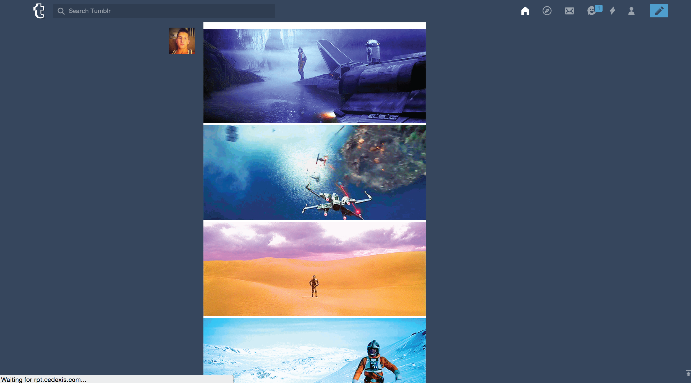

Analysis of Tumblr Interface
Tumblr, Instagram, Facebook, many other visual-based social media applications share similar interfaces and one particular feature in common: the infinite scroll. While this method is an excellent choice that is visually compelling, it also has several disadvantages that are tumblr-specific. On sites like facebook and Instagram where most people interact with several hundred people they know personally, on tumblr, users are more likely to be following blogs that are interest or theme specific: photography, illustration, fan-dom, ect.
As a result, the infinite scroll gets annoying, seeing as there’s no way for a blog user with differing interests to isolate or organize their posts on their scroll in to categories based on interests. Additionally, there’s no way to “mark” the position you left off at in the scroll, leading you to potentially have to rescroll through post you’ve seen in the past, which defeats the recreational novelty that most people associate tumblr with.
Most users on facebook and Instagram “stalk”, or look up people specifically outside of the infinite scroll, but that’s a relatively uncommon practice on tumblr, which really emphasizes the need for “marking”.